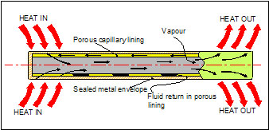

| The operational principal of a Heat-pipe is brilliantly simple! However the technology required to produce Heat-pipes that perform optimally and reliably is complex and very exacting. | |||
 |
|||
| The above diagrams show views of a sectioned Heat-pipe metallic enclosure with the installed capillary lining. Operating on the principle of latent heat of vaporisation, Heat-pipes utilise the phase change of a working fluid operating in what is an otherwise completely evacuated and sealed enclosure. The fluid actually exists within the vessel as a wet saturated vapour and when heat is applied to any point along the external surface, evaporation of the fluid occours at this point within the Heat-pipe and then condenses again at any other internal point which is at a fractionally lower temperature. In so doing, the latent heat of vapourisation during the phase change process is utilised to effect a very efficient energy transfer. | The passive operation of Heat-pipes requires no external motive power except that of the applied temperature differential “rT” provided by the thermal loading. Having no moving parts, they are silent in operation and extremely reliable. Heat-pipes produced by CRS Engineering are manufactured to very exacting standards for superb thermally conductive performance properties. Integrated Heat-pipe assemblies incorporating cooling fins, thermal input and heat sink pads can be produced as modular units so having minimal thermal resistance and being both simple and convenient to install. | ||